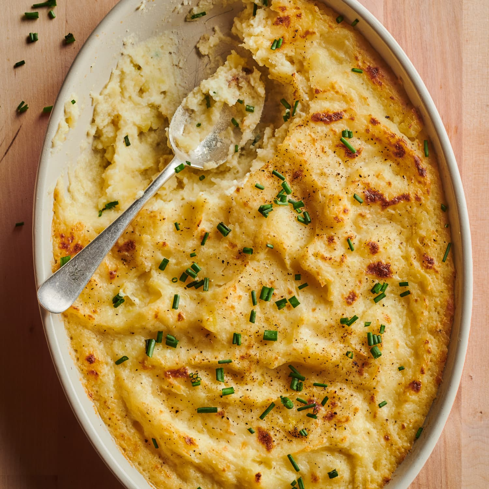

Homepage
Cheesy Mashed Potato

Description
Cheesy Mashed Potato is a great side that goes with most meats.
have it with your Sunday Lunch, or sausages and gravy.
The versatility of this dish will have you needing this recipe multiple times a week!
Ingredients
- 5 medium sized potatoes
- 3 Tbsp butter
- 200ml double cream
- 125g Gouda
- 125g Mozzarella
Steps
- Put water to boil on the stove.
- Peel potatoes and chop them into roughly 10 pieces per potato.
- Put potatoes into boiling water.
- When the potatoes are soft, drain the water and add the milk and cream.
- Mash the potatoes until smooth.
- Once smooth, add the cheeses and continue mashing.
- When the cheese has melted, serve piping hot.